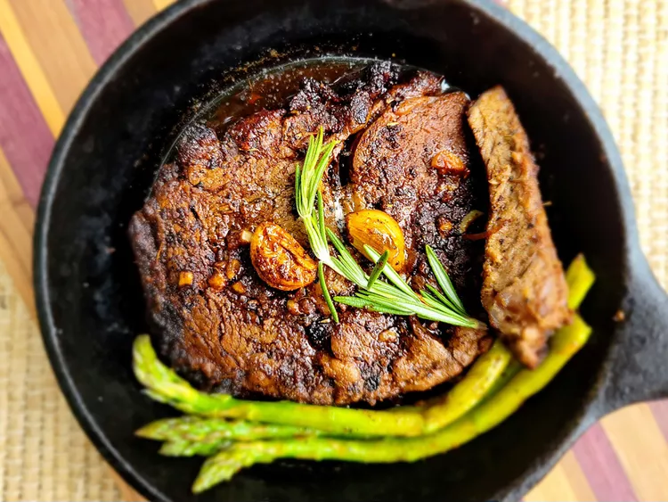

Juicy Steak Recipe
The key to a juicy steak is to cook it frozen!

Ingredients
- 1 tablespoon butter
- 1 (1/2 pound) frozen Delmonico (rib-eye) steak
- 1 tablespoon Worcestershire sauce, or to taste
- 1 teaspoon meat tenderizer
- 1 clove garlic, minced
- salt and black pepper to taste
Directions
- Step 1: Preheat the oven's broiler.
- Step 2: Spread 1/2 of the butter on top side of frozen steak. Sprinkle 1/2 of the Worcestershire sauce, 1/2 of the meat tenderizer, 1/2 of the garlic, salt, and pepper on top of butter. Place steak on a roasting pan.
- Step 3: Broil in the preheated oven for 6 to 8 minutes. Remove steak from the oven and flip over; spread remaining butter, Worcestershire sauce, meat tenderizer, garlic, salt, and pepper on top of steak.
- Step 4: Return to the broiler, and continue cooking for 6 to 8 minutes, or to desired doneness.